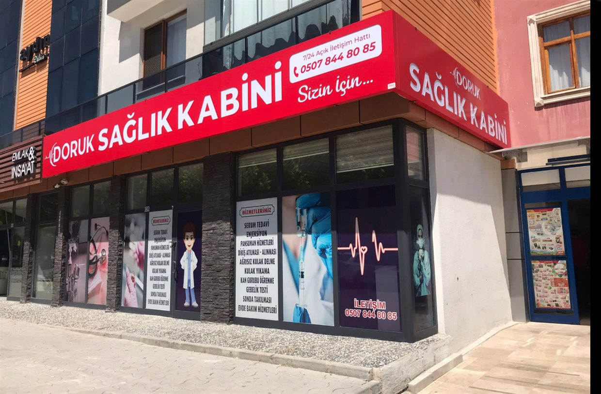

Kadın ve erkek çalışanlarımız mevcuttur
Doruk Sağlık Kabini
Sağlığınız için
her saat yanınızdayız.
Serum ve enjeksiyondan pansumana, ağrısız kulak delmeden evde bakıma kadar; hekiminizin istemindeki uygulamaları temiz, sakin ve özenli bir ortamda yapıyoruz.
- 10
- farklı sağlık hizmeti
- 7/24
- açık iletişim hattı
- Evde
- bakım ve uygulama
- Steril
- tek kullanımlık malzeme
Hizmetlerimiz
Ne için
gelebilirsiniz?
Satıra dokunun, ilgili hizmet için hazır mesajla WhatsApp'tan bize ulaşın. İlaç uygulamaları hekim reçetesi / istemi ile yapılır.
Evde Bakım Hizmetleri
Gelemiyorsanız,
biz geliriz.
Yatağa bağımlı, ameliyat sonrası iyileşen ya da yaşı ilerlemiş yakınlarınız için uygulamaları evinizde, aynı özenle yapıyoruz.
- Evde serum ve enjeksiyon uygulaması
- Yara bakımı ve pansuman
- Sonda takılması ve değişimi
- Dikiş alınması
İçeriden
Kapıdan girdiğiniz
andan itibaren.
Ferah bekleme salonu, ayrı uygulama odası ve sakin bir karşılama. Gelmeden önce içeriyi görün.
- 01Giriş
- 02Bekleme salonu
- 03Uygulama odası
- 04Dinlenme alanı
- 05Karşılama
Süreç
Üç adımda hallolur.
-
01
Yazın ya da arayın
Şikâyetinizi veya ihtiyacınız olan uygulamayı WhatsApp'tan iletin. Reçeteniz varsa fotoğrafını gönderin.
-
02
Saati birlikte belirleyelim
Size en uygun zamanı ayarlıyoruz. Kabine gelebilir ya da ev ziyareti isteyebilirsiniz.
-
03
Uygulama, sakin bir ortamda
Tek kullanımlık steril malzemeyle, acele etmeden ve her adımı anlatarak uyguluyoruz.

Kabinimiz
Kırmızı tabelayı
görünce buradasınız.
Cadde üzerindeki kabinimizde, mahremiyetinize özen gösterilen sakin bir ortamda hizmet veriyoruz. Yol tarifi ya da konum için WhatsApp'tan yazmanız yeterli.
Sık sorulanlar
Merak
edilenler.
Enjeksiyon ve serum için reçete gerekli mi?
Evet. İlaç içeren tüm uygulamalar (enjeksiyon, serum) hekim tarafından düzenlenmiş reçete veya istem ile yapılır. Reçetenizin fotoğrafını önceden WhatsApp'tan gönderebilirsiniz.
Randevu almam gerekiyor mu?
Zorunlu değil, ancak bekleme yaşamamanız için önceden yazmanızı öneririz. İletişim hattımız 7/24 açıktır.
Kulak delme ağrılı mı, kaç yaşından itibaren yapılıyor?
Ağrıyı en aza indiren yöntemle ve steril, tek kullanımlık malzemeyle yapılır. Çocuklar için yaş ve uygunluk konusunda önceden bilgi almanızı öneririz.
Evde bakım için hangi bölgelere geliyorsunuz?
Adresinizi WhatsApp'tan iletin; ziyaret saatini ve uygunluğu hemen bildirelim.
“Hastalığım ne?” aracı tanı koyar mı?
Hayır. Araç yalnızca seçtiğiniz belirtilere göre genel bilgi verir ve sizi doğru yere yönlendirmeyi amaçlar. Kesin tanı ve tedavi için mutlaka bir hekime başvurun. Acil durumda 112'yi arayın.